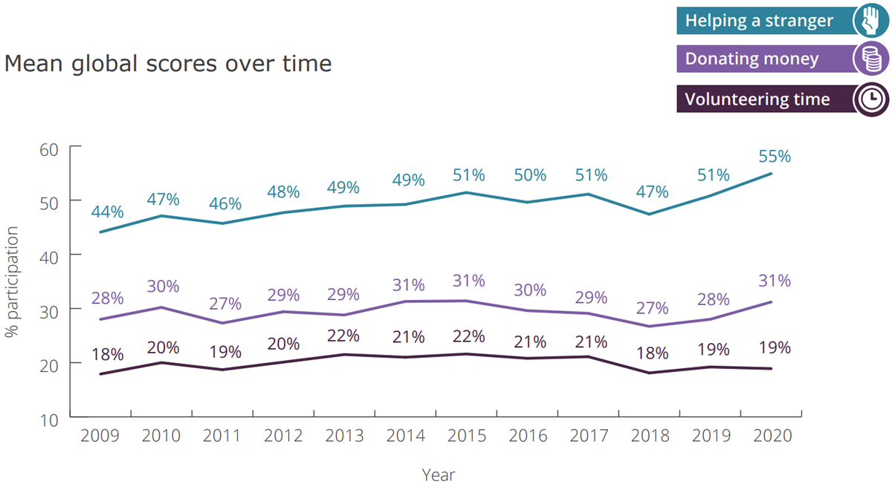
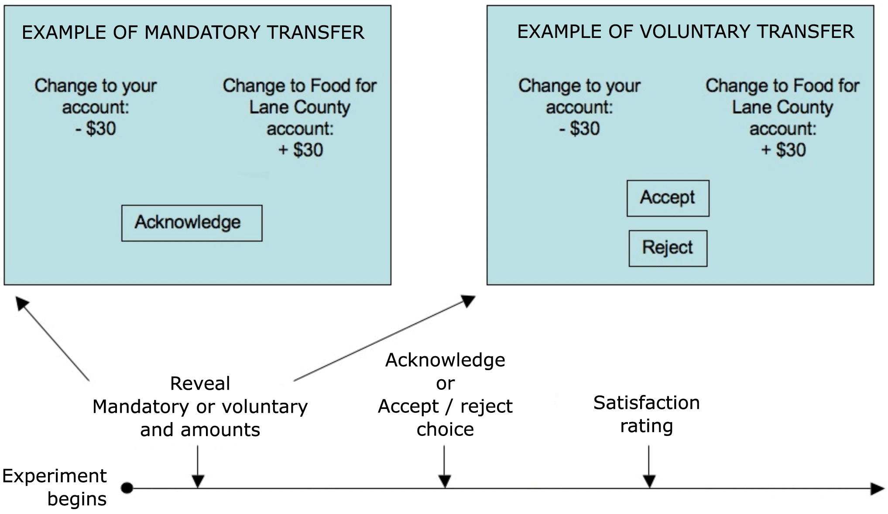
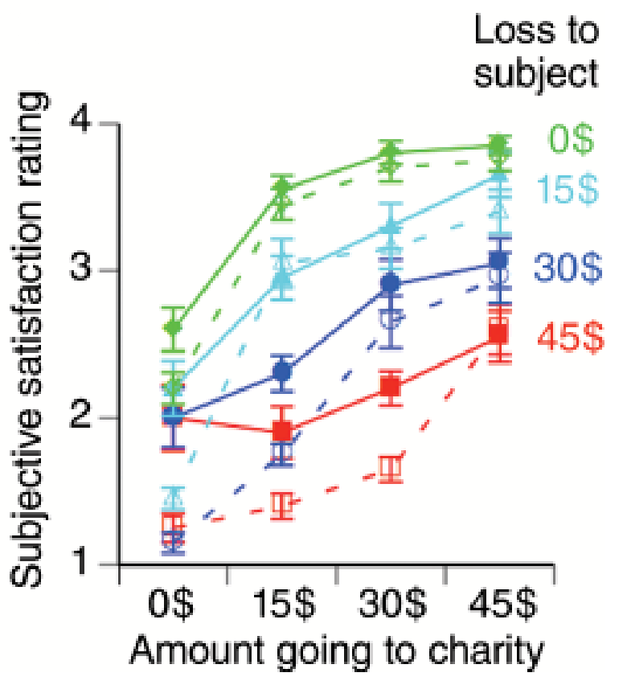
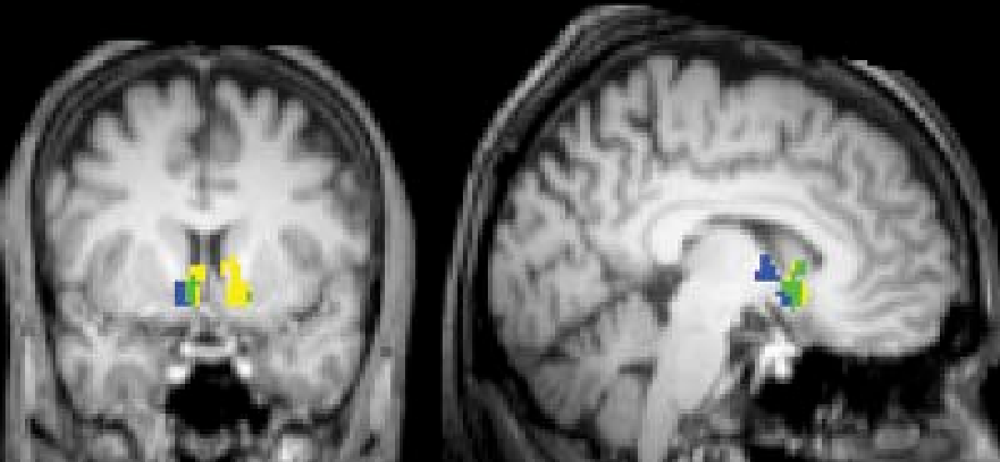
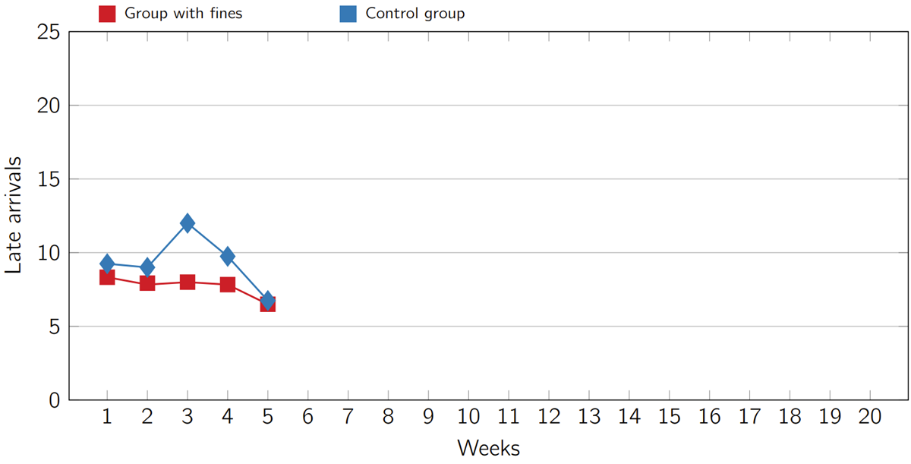
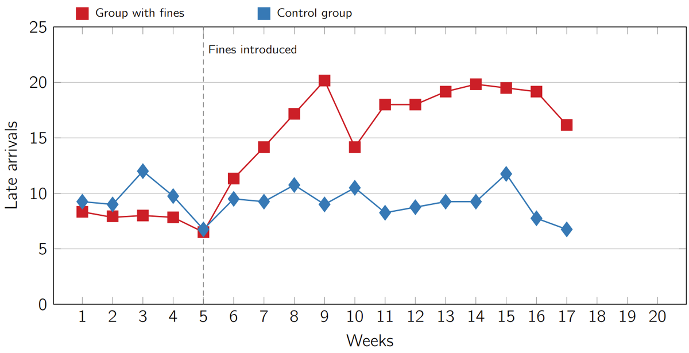
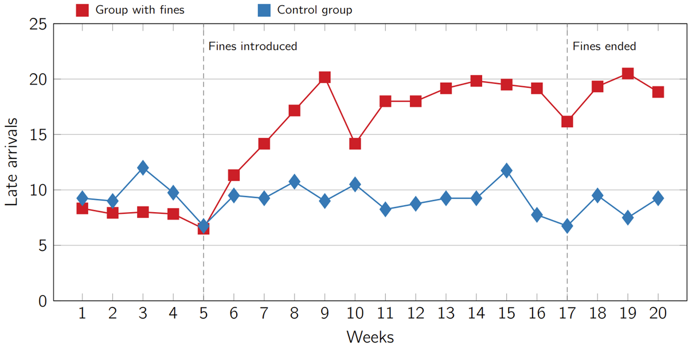
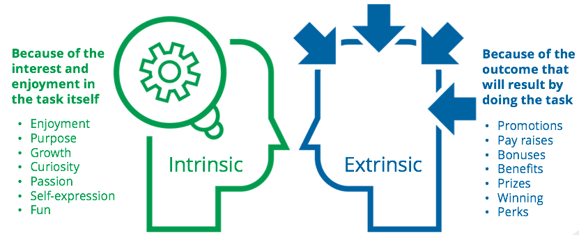

Behavioural Economics
and Consumer Decision Making
#3
November 2023
Let’s start with an experiment
- To access the experiment, you can either:
- Go to https://classex.uni-passau.de
- Scan the QR code below

Instructions
You will be randomly matched in pairs. You will not know who your match is. The experiment will consist of a single decision round.
Roles: allocator (), recipient (
 )
)At the beginning of the experiment, will receive an endowment of 10 Euros.
can send all, nothing, or part of their 10-Euro endowment to

Instructions (cont’d)
 will make no decision but will have to guess ’s splitting choice.
will make no decision but will have to guess ’s splitting choice.Communication between participants is prohibited.
Take the experiment seriously! One pair of students (
 ) will be randomly selected and rewarded according to ’s splitting decision.
) will be randomly selected and rewarded according to ’s splitting decision.
Let’s begin
Select your institution: LUISS Guido Carli
Choose your account name: Behavioral Economics and Consumer Decision Making II
Choose your account type: participant
Enter your password: Daje123
Quesion for the allocators: why did you behave the way you did?
To answer (anonymously) you can either:
- Go to www.slido.com and enter the code
1446 870. - Scan the QR code below.
- Go to www.slido.com and enter the code
Your answers will be displayed on the next slide.
Quesion for the allocators: why did you behave the way you did? (cont’d)
The dictator game
The experiment you took part in is known as the dictator game (Kahneman, Knetsch, and Thaler 1986).
It is designed to assess how individuals behave in situations where self-interest and equality are opposed.
- Do you think on average people behave like you?
- For example, to what extent do you think your behaviour differs from the behaviour convicted criminals?
- Birkeland et al. (2014) conducted an experiment to answer this question.
The dictator game: experimental evidence
Read the paper HERE
Social preferences (cont’d)
Social preferences
Preferences that place a value on what happens to other people.
- There is considerable heterogeneity in desires for giving and reciprocity. Some people behave pro-socially, other people are self-interested free-riders.
Some facts about giving around the world

Why do you think people give?
To answer (anonymously) you can either:
- Go to www.slido.com and enter the code
1966 389. - Scan the QR code below.
- Go to www.slido.com and enter the code
Your answers will be displayed on the next slide.
Why do you think people give? (cont’d)
Why do people give?
- Pure altruism: you help others for the sake of it, while remaining completely unselfishly motivated.
- Pure altruists are motivated solely by the desire to provide for others.
Why do people give? (cont’d)
- Impure altruism (Andreoni 1990): you help others because…
- You take pleasure in “doing good”, regardless of the actual impact of your generosity (warm glow).
- You fear that otherwise you would face social disapproval.
- An impure altruist may give more if their giving is publicly observable.
- This is because giving can serve as a way for people to signal something good about themselves.
Why do people give? (cont’d)
Suppose that you are considering whether or not to fund the construction of a public library.
If you are a pure altruist, then you donate money and enjoy the knowledge that the library will be built.
If you are an impure altruist, then you donate money and enjoy the knowledge that you have donated to the project.
- Perhaps what you take pleasure in is viewing a plaque with your name written on it, which publicly states the good you did for the community.
Pure and impure altruism are not mutually exclusive.
Why do people give? Experimental evidence
- To investigate the relative importance of pure altruism and warm-glow motives for charitable giving, Harbaugh, Mayr, and Burghart (2007) used functional magnetic resonance imaging (fMRI) while subjects were playing a dictator game.
Why do people give? Exp. evidence (cont’d)
- Subjects received $100 and then made decisions about whether or not to donate money to a local food bank.
- They also observed mandatory, tax-like transfers of their money to the food bank.

Why do people give? Exp. evidence (cont’d)
- If givers were driven exclusively by impure altruism, then…
- They should derive satisfaction from making a voluntary gift.
- They should not derive satisfaction from mandatory (i.e. non-voluntary) transfers.
- If givers were driven by pure altruism, then…
- They should get some satisfaction even in the case of mandatory transfers.
- This is because pure altruists care only about how much money the food bank receives, and not about the process by which the transfer occurs.
Why do people give? Exp. evidence (cont’d)

- Satisfaction…
- Increased as charitable transfers increased and personal losses decreased.
- Was higher in the voluntary (solid) than in the mandatory (dashed) conditions.
Why do people give? Exp. evidence (cont’d)

- Neural response in the ventral striatum to mandatory payoffs for the subject (yellow), the charity (blue), and both (green).
- The ventral striatum is the area of the brain associated with receiving rewards.
Why do people give? Exp. evidence (cont’d)
Consistent with pure altruism, mandatory transfers to a charity induce feelings of satisfaction and trigger neural activity in areas linked to reward processing.
Consistent with warm glow, satisfaction and neural activity further increase when people make transfers voluntarily.
Pure altruism and impure altruism both play a role in charitable giving.
A daycare story
Social preferences may be very sensitive to the context in which decisions are made. Let’s see an example.
It is common for parents to rush to pick up their children from daycare.
Sometimes parents are late, making teachers stay extra time.
What would you do to discourage parents from being late?
What would you do to discourage parents from being late?
To answer (anonymously) you can either:
- Go to www.slido.com and enter the code
2096 038. - Scan the QR code below.
- Go to www.slido.com and enter the code
Your answers will be displayed on the next slide.
What would you do to discourage parents from being late? (cont’d)
A daycare story (cont’d)
Gneezy and Rustichini (2000) conducted an experiment in Haifa, introducing fines in some daycare centres but not others (these were used as controls).
A sign was posted on the door of the daycare centres in the treatment group:
The sign
Since some parents have been coming in late, we (with the approval of the Authority for Private Day Care Centers in Israel) have decided to impose a fine on parents who come late to pick up their children. As of next Sunday a fine of NIS 10 [about 3 Euros at the time] will be charged every time a child is collected after 16.10.
A daycare story (cont’d)
- Late arrivals before the introduction of the fines

What do you think was the effect of this policy?
To answer (anonymously) you can either:
- Go to www.slido.com and enter the code
2135 975. - Scan the QR code below.
- Go to www.slido.com and enter the code
Your answers will be displayed on the next slide.
What do you think was the effect of this policy? (cont’d)
A fine is a price
- Late arrivals after the introduction of the fines

A fine is a price (cont’d)
Parents in treatment group daycares responded to the fines by doubling the fraction of time they arrived late!
After twelve weeks, the fine was revoked.
What do you think happened?
- Nothing. The parent’s increased tardiness persisted.
A fine is a price (cont’d)
- Late arrivals after the suspension of the fines

A fine is a price (cont’d)
Why did putting a price on lateness backfire?
Possible explanation:
- Before the fine was introduced, most parents were on time because of a moral obligation to avoid inconveniencing the daycare staff
- That is, parents felt an altruistic concern for the staff.
- The imposition of the fine signalled that the situation was really more like shopping. Lateness had a price and so could be purchased, just like vegetables or shoes.
A fine is a price (cont’d)
- Possible explanation (cont’d):
- Thus, placing a price on lateness, as if putting it up for sale, seems to have undermined the parents’ sense of ethical obligation to avoid inconveniencing the teachers.
- The incentive conveyed the wrong message: “it’s okay to be late as long as you pay for it”.
Crowding out of social preferences
The experiment suggests that people sometimes act in more self-interested ways in the presence of material incentives (e.g. the price of lateness) than in their absence.
When fines and prices have these unintended effects, we say that social preferences are crowded out, or displaced, by incentives that appeal to material self-interest.
This crowding out effect is persistent: when the fine was removed, parents continued to pick up their children late.
Crowding out of social preferences (cont’d)
Is the crowding out effect a prerogative of adults? Apparently not.
Warneken and Tomasello (2008) conducted an experiment with two-years old children.
Children strove to help an adult retrieve an out-of-reach object in the absence of rewards.
When they were rewarded with a toy for helping the adult, the helping rate fell off by 40 percent
Intrinsic and extrinsic motivation
- The result of these experiments can also be interpreted in terms of intrinsic vs. extrinsic motivation.
- For example, in Warneken and Tomasello’s experiment, material extrinsic rewards crowded out children’s intrinsic motivation to help.

Social preferences